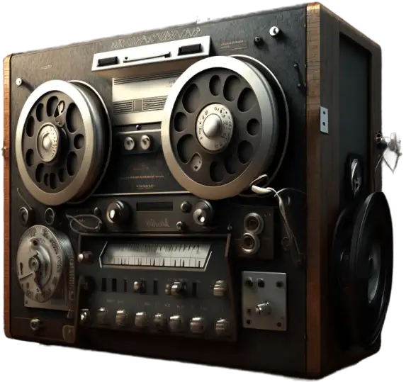

Студия звукозаписи

Работа со звуком, плюс песня под минус,
Сведение трека, напишем вам текст
В конечном итоге, рождается песня
Поют голоса и звучит инструмент
Ketron Audya 5
Профессиональная аранжировочная станция с максимально реалистичным звучанием живых инструментов. Многообразие стилей, более 500, "живые барабаны" со стерео-эффектом Настоящие акустические и электрогитары с басовым аккомпанементом. 942 тембра с сумарной полифонией 197 нот.
-
ballad
-
pop
-
dance
-
party
-
rock
-
country
-
swing
-
latin
-
r&roll
-
unplugged
-
folk
-
ballroom
Каждый из указанных стилей, имеет от 40 до 50 вариаций по жанру.
Аранжировка Ваших песен

Отправьте демо-запись Вашей песни, в любом звуковом формате и сообщите, что Вы желаете услышать в результате.
В соответствии этого, выберем стиль, темп и характер аранжировки. На этой страничке размещены примеры стилей профессиональной аранжировочной станции Ketron Audya 5, которые можно прослушать онлайн. Такой инструмент большое подспорье для творчества. Более 500 стилей в вашем распоряжении.
При желании аранжировку можно дополнить живой соло гитарой или саксофоном. Конечным результатом будет аудиофаил (мультитрек), готовый для дальнейшей записи вокала.
Отправьте демо-запись Вашей песни, в любом звуковом формате на адрес uadspb@yandex.ru и сообщите, что Вы желаете услышать в результате.
Сведение трека. Мастеринг
- Поэтапная обработка ваших аудио и миди треков: эквализация, динамическая и пространственная обработка, наполнение fx-эффектами
- Доработка инструментальных и вокальных партий проекта до полноценного, теплого, плотного и выровненного по частотным характеристикам финального микса
Запись голоса, сольного инструмента, песни под гитару

- Записать вокал и гитару профессиональными микрофонами, известные мелодии в Вашем исполнении под минус, на саксофоне и других солирующих инструментах.
- Откорректировать вокал по высоте и длительности звучания. Записать музыкальное поздравление в подарок,для свадьбы, демо для конкурса, детям и взрослым.
Минусовку легко найти в интернете. Например на сайте x-minus. Все это возможно и творчески интересно!

Текст для вашей песни под заказ
Желающим записать песню, иногда не хватает фантазии, времени для того, чтобы написать приемлемый текст, который удовлетворил ожидания автора.
Не проблема, текст будет соответствовать выбранному жанру и тематике автора.
Оцифровка
Оцифровка и восстановление ваших архивных аудио и видеоматериалов.
Сохранение вашей истории в максимально возможном качестве на цифровом носителе.